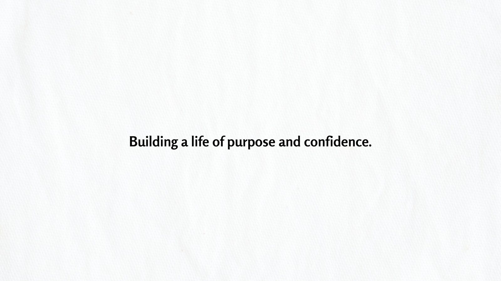
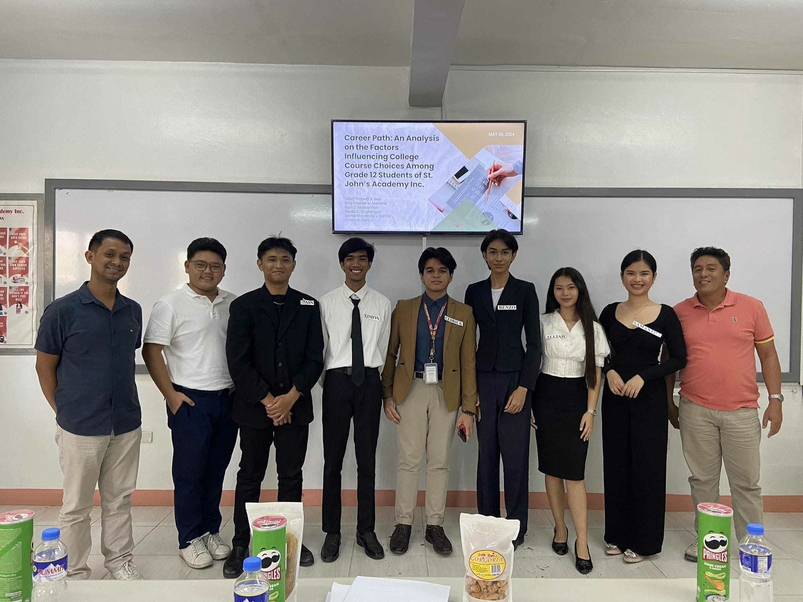
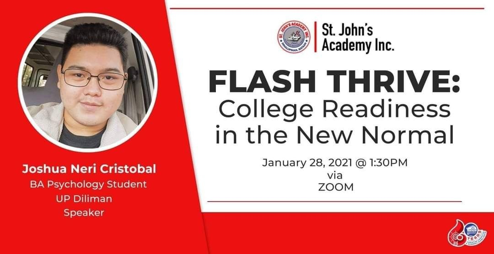
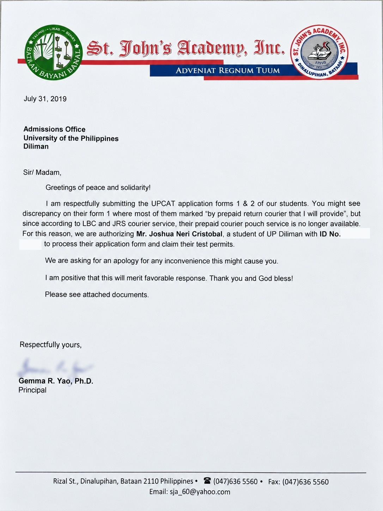
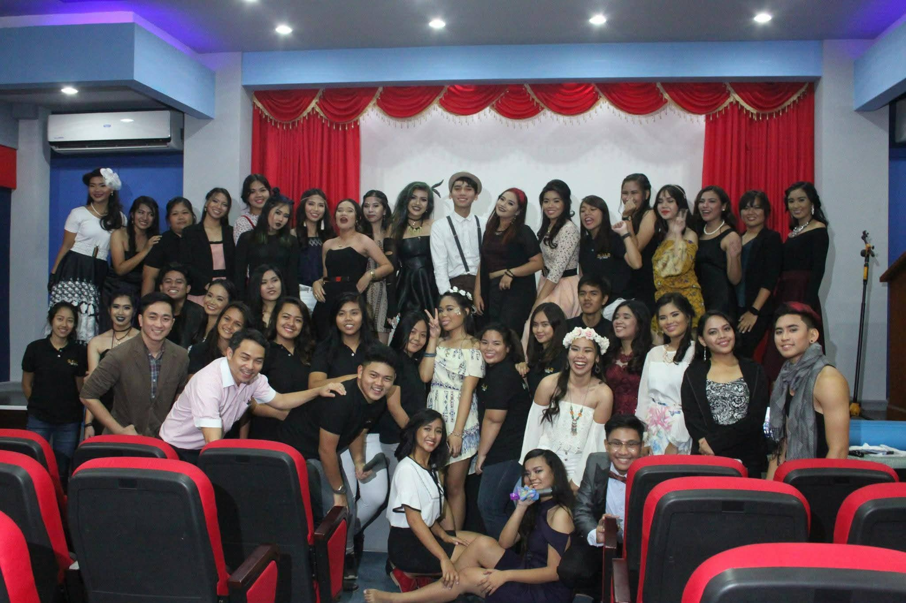

Motivation
What makes someone keep going when learning becomes difficult?
Reflections · Character in practice
A place where confidence, preparation, self-awareness, communication, and growth become visible because people are actively trying to learn, improve, or help someone else do the same.
Reflections
Education and development make the human side of learning easier to see. The same material can meet different levels of confidence, preparation, attention, motivation, support, and expectation.
Learning is not simply a transfer of knowledge. It is an encounter between a person, an environment, and an idea of who that person might become.
Through Character, the questions become more personal: What helps someone persist? What makes them withdraw? Whose expectations matter? What changes when they begin to see themselves differently?
What makes someone keep going when learning becomes difficult?
What changes when people begin to see themselves as capable of more?
What happens when explanation has to meet the person receiving it?
What changes when people can recognize both what they can do and where they still need support?
01 · Experiences in Practice
Arranged from newest to oldest, these cases document moments when learning became something to share, evaluate, organize, or return to others through feedback, recognition, preparation, access, communication, and support.

An invited Healthy Mind session for 300 BS Accountancy student interns, using self-awareness, self-acceptance, resilience, self-leadership, and self-efficacy to examine how purpose and confidence can be built deliberately.
Read case
Returning to St. John Academy as Chairperson of the Board of Research Panelists across STEM, ABM, and HUMSS became a chance to support student researchers from the other side of the table through questioning, feedback, evaluation, and the selection and presentation of the best paper in each strand.
Read case
My first invited talk, delivered at my alma mater, became a reflection on self-awareness, uneven starting points, and why college is not only something we survive individually, but something we learn to survive together.
Read case
How a four-Saturday review program, supported by preparation and post-review assistance, became a case in confidence, access, and the practical work behind educational opportunity.
Read case
A Principles of Marketing project that moved from classroom concepts into a live fashion show centered on sustainable fashion and locally produced cosmetics, with event organization and staging as part of the learning.
Read case02 · Essays
Arranged from newest to oldest, these 12 pieces examine identity, prejudice, media, political persuasion, education, social science, inequality, service, nationhood, and digital culture while preserving each work in its original academic context. Later reinterpretation belongs in Insights.
A culmination project examining coming out as a social process shaped by prejudice, identity, relationships, group belonging, socioeconomic conditions, and support.
Read essay Psych 180 · Social Psychology · University of the Philippines · Module Reflection · 2022A module reflection examining how prejudice and discrimination move between individual attitudes and wider institutions, and how empathy, intergroup contact, law, and reflection can help reduce them.
Read reflection BMAS 100 · Introduction to Broadcast Media Studies · University of the Philippines · Political Campaign Analysis · 2022A campaign-period analysis of persuasion, credibility, endorsements, audience targeting, political advertising, and infrastructure-centered political branding.
Read essay BMAS 100 · Introduction to Broadcast Media Studies · University of the Philippines · Media AnalysisA media analysis of Filipino BL series through political economy, audience power, representation, genre, programming, and LGBTQIA visibility.
Read essay PI 100 · The Life and Works of Jose Rizal · University of the Philippines · Academic Essay · 2021An essay arguing that liberating education requires attention to teaching, language, facilities, poverty, health, employment, and the wider conditions shaping students' ability to learn.
Read essay Soc Sci 1 · Foundations of Social Science · University of the Philippines · Academic EssayAn essay on why the social sciences are sciences in their own right, how their theoretical and methodological traditions developed, and why their contribution to knowledge matters.
Read essay Soc Sci 1 · Foundations of Social Science · University of the Philippines · Critical Social Science EssayA critical essay examining colonialism, imperialism, capitalism, power, development, inequality, and the role of self-determination.
Read essay Soc Sci 1 · Foundations of Social Science · University of the Philippines · Reaction PaperA reaction paper connecting C. Wright Mills' sociological imagination and intellectual craftsmanship with a study of altruism and the social construction of knowledge.
Read reaction paper Psych 108 · Sikolohiyang Pilipino · University of the Philippines · Service-Learning ReflectionA service-learning reflection on He Cares Mission, empathy, pakikiramdam, kapwa, personal change, faith, and the meaning of service.
Read reflection English 13 · Writing as Thinking · University of the Philippines · Argumentative EssayAn argumentative essay examining how gender was framed as influencing political leadership through demeanor, performance, and relationships.
Read essay English 13 · Writing as Thinking · University of the Philippines · Argumentative EssayAn argumentative essay on technology, education, media, youth, culture, and the development of Filipino nationhood.
Read essay Grade 12 · Media and Information Literacy · St. John Academy · AY 2017-2018An individual contribution to a collaborative paper examining celebrity influence, cosmetics, confidence, imitation, before-and-after transformation, and online culture.
Read excerptTwo essays on questioning familiar assumptions, learning from others, and turning new understanding into useful contributions.
On why scientific thinking and creativity need not be opposites, and how observation, imagination, and inquiry inform one another.
Read the essay Loud & Load · Creativity · Related essayOn asking for help, learning what you do not know, applying what you learn, and leaving an organization better than you found it.
Read the essayCharacter → Reflections
Return to Work to see how Character, Creativity, and Community become Reflections, Renaissance, and Resistance through engagement.
Explore Reflections